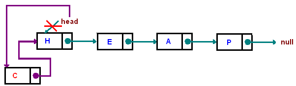
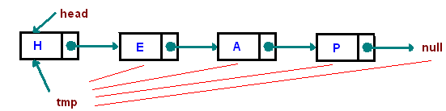
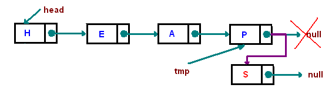
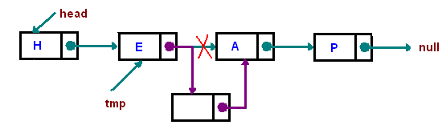
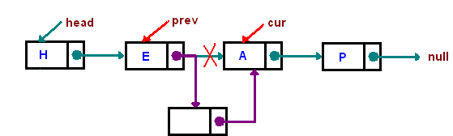
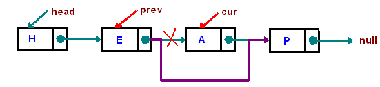

Linked List
Introduction
One disadvantage of using arrays to store data is that arrays are static structures and therefore cannot be easily extended or reduced to fit the data set. Arrays are also expensive to maintain new insertions and deletions. In this chapter we consider another data structure called Linked Lists that addresses some of the limitations of arrays. A linked list is a linear data structure where each element is a separate object.
Each element (we will call it a node) of a list is comprising of two items - the data and a reference to the next node. The last node has a reference to null. The entry point into a linked list is called the head of the list. It should be noted that head is not a separate node, but the reference to the first node. If the list is empty then the head is a null reference.
A linked list is a dynamic data structure. The number of nodes in a list is not fixed and can grow and shrink on demand. Any application which has to deal with an unknown number of objects will need to use a linked list.
One disadvantage of a linked list against an array is that it does not allow direct access to the individual elements. If you want to access a particular item then you have to start at the head and follow the references until you get to that item.
Another disadvantage is that a linked list uses more memory compare with an array - we extra 4 bytes (on 32-bit CPU) to store a reference to the next node.
Singly Linked List

Doubly Linked List

addFirst - The method creates a node and prepends it at the beginning of the list.
public void addFirst(AnyType item) {head = new Node
}

Traversing - Start with the head and access each node until you reach null. Do not change the head reference.
Node tmp = head;
while(tmp != null) tmp = tmp.next;

addLast -The method appends the node to the end of the list. This requires traversing, but make sure you stop at the last node
public void addLast(AnyType item)
{
if(head == null) addFirst(item);
else
{
Node
while(tmp.next != null) tmp = tmp.next;
tmp.next = new Node
}
}

Inserting "after" - Find a node containing "key" and insert a new node after it. In the picture below, we insert a new node after "e":
public void insertAfter(AnyType key, AnyType toInsert)
{
Node
while(tmp != null && !tmp.data.equals(key)) tmp = tmp.next;
if(tmp != null)
tmp.next = new Node
}

Inserting "before" Find a node containing "key" and insert a new node before that node. In the picture below, we insert a new node before "a":
public void insertBefore(AnyType key, AnyType toInsert)
{
if(head == null) return null;
if(head.data.equals(key))
{
addFirst(toInsert);
return;
}
Node
Node
while(cur != null && !cur.data.equals(key))
{
prev = cur;
cur = cur.next;
}
//insert between cur and prev
if(cur != null) prev.next = new Node
}
}

Deletion - Find a node containing "key" and delete it. In the picture below we delete a node containing "A"
The algorithm is similar to insert "before" algorithm. It is convinient to use two references prev and cur. When we move along the list we shift these two references, keeping prev one step before cur. We continue until cur reaches the node which we need to delete. There are three exceptional cases, we need to take care of: list is empty
delete the head node
node is not in the list
public void remove(AnyType key)
{
if(head == null) throw new RuntimeException("cannot delete");
if( head.data.equals(key) )
{
head = head.next;
return;
}
Node
Node
while(cur != null && !cur.data.equals(key) )
{
prev = cur;
cur = cur.next;
}
if(cur == null) throw new RuntimeException("cannot delete");
//delete cur node
prev.next = cur.next;
}

Applications
The main Applications of Linked Lists are- For representing Polynomials
- In Dynamic Memory Management
- In Symbol Tables
- Representing Sparse Matrix
- For representing polynomials It means in addition/subtraction /multiplication.. of two polynomials. Eg:p1=2x^2+3x+7 and p2=3x^3+5x+2 p1+p2=3x^3+2x^2+8x+9
- In Dynamic Memory Management In allocation and releasing memory at runtime.
- In Symbol Tables in Balancing parentheses
- Representing Sparse Matrix
Run Code